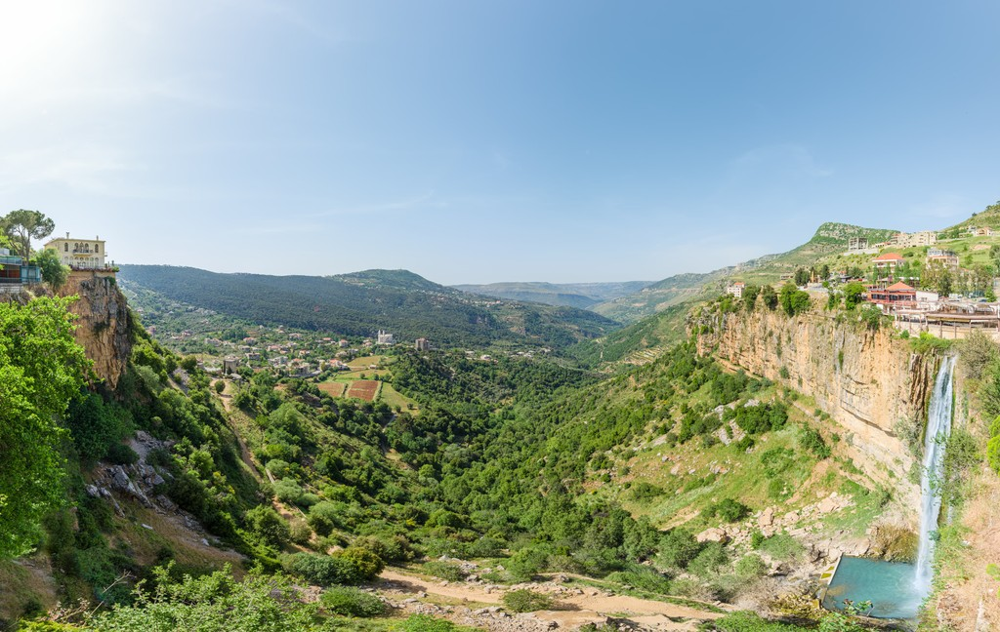

.jpg "Flag of Lebanon")
Islamic and Christian traditions are engraved into Lebanese culture. Lebanese culture is highly collectivistic. Colllectivism is the act of grouping yourself with others and putting your group's values and interests ahead of your own. Lebanese people are very loyal. For religion, the country is mostly islamic but a good portion of Lebanon is also christian. About 32% or a third of the country is Christian.
The area of Lebanon was first lived in by the Phoenicians in the third millennium BC. The area of Lebanon was fought over a ton until WWII until they finally achieved independence. Free French and England took over Nazi-occupied Lebanon and promised Lebanon freedom in 1940. A government is formed and Bechara al-Khoury is named first president. A civil war started in 1975 and lasted until 1990. Then there was the Syrian uprising in 2011.

The government of Lebanon is a strong confessionalism. To explain you must know that Lebanon has had civil wars between themselves because of people’s religion. So, in order to prevent such civil war the Lebanon government splits power of the leaders to the weight of the religion. But they also raise other problems. Since the country is still mostly Islam then the Islamic majority has more power over the country.
Lebanon has a free market economy. Lebanese people get to enjoy little to no restrictions for their day to day life trying to make money. Of the middle east, Lebanon has one of the more impressive gdp per capitas. Per person on average you would make around 4,000 usd, it used to be around 9,000 but are facing a widespread political and economic crisis resulting in widespread poverty. Less impressive is their gdp only around 23 billion, compared to the Middle east they rank very low.
Lebanon is located in the middle east it shares borders with the mediterranean sea. The geography of Lebanon is very diverse. Lebanon With rugged terrain with alpine peaks all the way to green fertile valleys. Lebanon is cut in the middle vertically by the Lebanon Mountains. Touching the shore is an extremely narrow coastal plain. The climate involves wet winters and very hot and dry summers. The temperature range from 32C in July to 10C in the winter.
Hank Myers
PD/4
11/17
Country Project